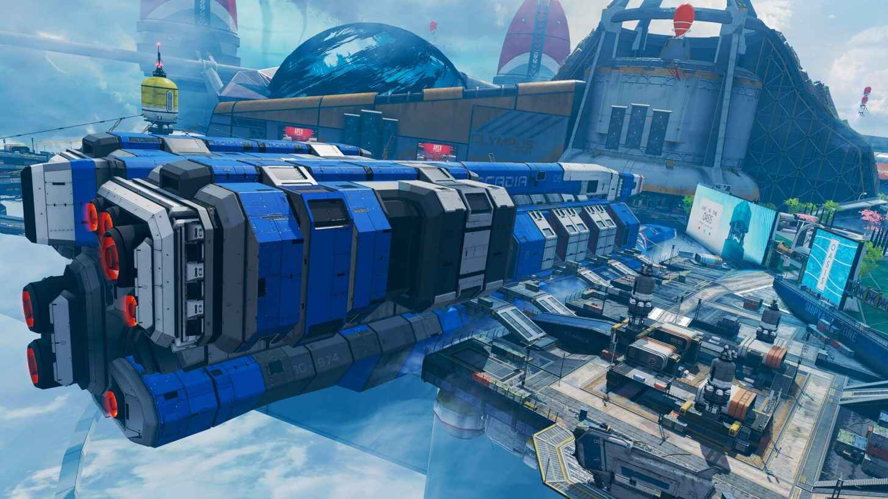
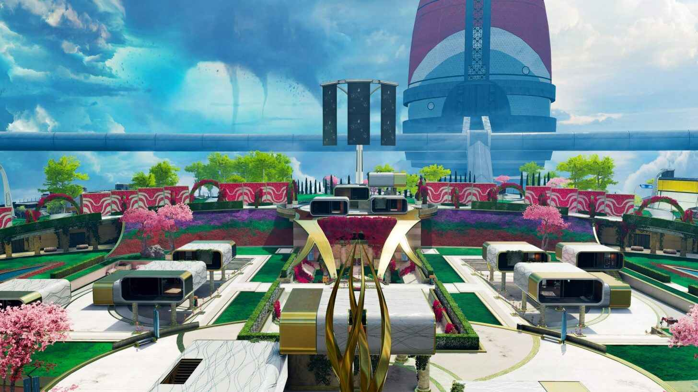

Season 07 Patch Notes
Map Rotation
With the new season comes a new map and Respawn is thinning out the map rotation. For the first two weeks, players will only be able to dive into Olympus in casual games and in the limited-time Olympus Preview mode.
Legend Adjustments
Bangalore
Bangalore’s ultimate will deploy faster, in six seconds instead of eight. The shorter fuse “will encourage enemies to leave the zone slightly faster,” and it could also increase the ability’s synergy with Horizon’s ultimate. A faster deployment time means that using the two in conjunction becomes more comfortable.
Caustic
Caustic’s traps will also see significant changes. The blurred-vision effect of the Nox Gas is out of the picture, but to make up for lost power, Respawn is buffing its damage. Ticks deal increasing damage ranging from six to 12 health instead of four to 10.
Mirage
Mirage mains are getting a new toy. The trickster’s decoys now have 45 health but won’t work as a shield. Any bullet that hits the hologram will continue to travel normally until it hits another object. Decoys will also flicker temporarily after being shot to help discern between the real Mirage and his clones.
Octane
Octane’s heal rate will double to one health per second, which allows the daredevil to regenerate much faster and be more aggressive—just like Octane should be.
Wattson
Wattson’s fences are getting a boost and are ready to stop anything in her tracks. The damage of her tactical will increase to 15 from a previous 10, which makes her fences even deadlier. Players will want to triple-check a room before storming through the door.
Loba
Loba’s Black Market is getting an upgrade. Players can stock up on all the ammunition they want without burning through a slot, which is perfect to solve your team’s loot needs.
Rampart
Rampart’s ordnances will get to work much quicker. The new patch will drop Sheila’s spin-up time to 1.25 seconds (down from two) and amped cover will trigger after just three seconds instead of the previous four.
Pathfinder
Pathfinder’s changes aren’t confined to his kit. Respawn updated his hitbox to make him a little easier to hit, but he’s still harder to hit than other legends. The developers also maintained the Low Profile passive, which increases incoming damage.
Pathfinder’s Grappling Hook is going under the knife, too. Respawn is pushing an intense variant of the recent changes to his tactical. His cooldown is capped at 30 seconds, which, accounting for animations, means that the downtime won’t be larger than 35 seconds in total. Respawn has doubled the amount of distance necessary to reach the maximum cooldown and will allow the Grappling Hook to be considered “finished” even if the legend isn’t touching the floor.
Weapon Meta
The new season is bringing key balancing changes to some weapons, too, including the reintroduction of the R-99 as ground loot and the Prowler’s move to care package territory.
Hemlok
The Hemlok will receive a different recoil pattern, which applies mostly to the burst-fire mode, and its headshot multiplier will also drop to 1.75 (39 damage instead of 44). The Havoc will follow a similar route and get an overhauled recoil pattern.
Sentinel
The Sentinel will see a significant boost. Instead of its old Disruptor effect, which dealt extra damage against shields, charging up the sniper rifle will increase its damage across the board from 70 to 88.
New Hop-Up
Players will also encounter a new hop-up called Quickdraw Holster, applicable for the Wingman and RE-45. It decreases weapon swap time, hipfire spread, and holster animations. Wingman users will have to choose between the new hop-up and the Skullpiercer, which increases headshot damage.
Game Meta
Evo Shields
The Ring
Game Updates
Welcome to Olympus
Dave Osei, Senior Level Designer (Apex Legends)Olympus is the third map coming to Apex Legends and is a floating city high above the planet Psamathe. This new location boasts lush, artificial terrain with stylised landscapes for those that appreciate opulent decor. Gone are the tall, cliffside rocks from Kings Canyon and World’s Edge. Instead, you’ll find perilous open space that showcases the clouds below. Olympus comes with two new ways to traverse the map: the Phase Runner and the Trident, Apex Legends’ first vehicle.
Traversing Olympus
The Trident is a squad-based, three-seater hover vehicle you can find on the outskirts of Olympus. These were made for large rotations throughout the map, especially in the early game. The Trident comes equipped with a boost feature that for a short time, can increase speed and help you get over obstacles.
It’s also worth mentioning that if you accidentally drive the Trident off the map, don’t worry! We have a safety net in place that will launch all players into the sky so you can safely land back onto Olympus. The Trident does not respawn, so please be careful!
Last but certainly not least is the Phase Runner; an industrial sized phase portal connecting three distinct areas of Olympus. This always-on, static portal will phase players to and from specific locations. If the ring is pushing you towards Hydroponics, and you’re stuck with no Trident in sight, hop into the Phase Runner to phase you to the other side of the map. However, be cautious when using these, as you have no clue what’s waiting for you on the other side.
Points of Interest on Olympus
Velvet Oasis
Arcadia Supercarrier
Docks
Primary Power Grid
Rift Aftermath
Central Turbine
Autumn Estates
Hammond Labs
Energy Depot
Golden Gardens
Grow Towers
Orbital Cannon Test Site
Solar Array
Bonsai Plaza
Hydroponics
Elysium
Olympus houses many challenges and playstyles for a very different experience than you’re used to. The Phase Runner and Trident are exciting new tools to traverse to each zone. From the seedy underbelly of Energy Depot to the glistening Bonsai Plaza, Olympus will give you new experiences, new environments, and new ways to test your skills.
The city awaits… see you soon!